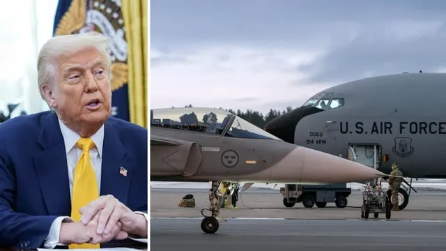

US Troops Conduct Joint Exercises in Eastern Europe

March 11, 2026 — UBNews Defense Desk
United States and NATO forces are participating in large-scale military exercises across several countries in Eastern Europe as part of ongoing readiness training.
The exercises involve ground forces, air support units, and logistics teams working together to practice coordinated operations under simulated combat conditions.
Military planners say the drills help improve communication and interoperability between allied forces that may need to operate together in real-world scenarios.
Training activities include armored maneuvers, airborne operations, and joint command exercises designed to test coordination between multiple nations.
Officials emphasized that the exercises are routine and intended to strengthen partnerships among allied militaries.